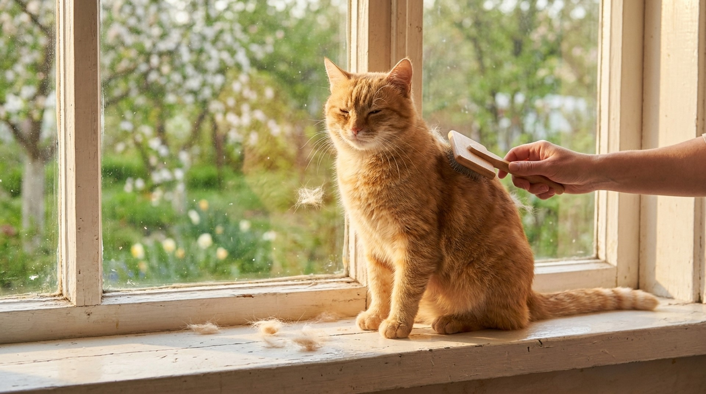

Май — пик весенней линьки. Шерсть летит с диванов, одежды и кажется, что с кошки выпадает половина покрова. У большинства кошек так и есть — это нормальная смена зимнего подшёрстка на летний. Но иногда за «обычной линькой» скрываются дефицит питания, паразиты или эндокринные нарушения. Разбираем, как отличить одно от другого.
Шерсть кошки растёт циклами: рост, переходная фаза, покой, выпадение. В норме кошка линяет постоянно, но интенсивность зависит от светового дня. Больше света — активнее смена шерсти. Именно поэтому пик линьки приходится на март-май (смена зимней шубки на летнюю) и сентябрь-октябрь (подготовка к зиме).
Кошки, живущие в квартирах с искусственным освещением и стабильной температурой, линяют более равномерно в течение года — их фотопериодические циклы смазаны. Уличные кошки и те, кто летом выезжает на дачу, линяют ярче и сезоннее.
Породные различия огромны:
Нормальная весенняя линька выглядит так:
Если кошка здорова, активна, ест как обычно и кожа чистая — можно расслабиться и просто вычёсывать.
Линька переходит из нормы в патологию, если:
Вычёсывание
Питание в период линьки
Против шерстяных шаров
Миф: «Если остричь кошку, линька прекратится».
Нет. Фолликулы продолжают работать — просто состриженная шерсть будет короче. Стрижка уместна при тяжёлых колтунах, но не для уменьшения линьки.
Миф: «Весенняя линька — это стресс для кошки».
Здоровая кошка не испытывает дискомфорта при нормальной линьке. Дискомфорт возникает от колтунов и от навязчивого зуда — это уже патология.
Миф: «Кормить жирной едой улучшит шерсть».
Избыток жиров ведёт к ожирению, а шерсть страдает от лишнего веса, а не улучшается. Нужны правильные жиры (омега-кислоты), а не количество.
Миф: «Линька в квартире ненормально сильная — нужно к врачу».
Нет, если кожа чистая и нет симптомов. Квартирные кошки действительно часто линяют интенсивнее уличных из-за нестабильного фотопериода.
Блохи — кошка вылизывает живот до лысины, особенно по средней линии. Типичные зоны — хвост у основания, живот, паховая область. Решение: антипаразитарная обработка.
Аллергия — на корм или контактные вещества. Симметричные залысины без воспаления, зуд, иногда чихание. Диагностика: элиминационная диета на 8-12 недель (гидролизованный белок) или аллергологический тест.
Дерматофития (лишай) — очаговое выпадение шерсти с обломанными волосами, шелушение по краям очага. Заразна для людей. Диагностика: лампа Вуда, соскоб, посев на культуру.
Гипертиреоз — у кошек старше 10 лет. Диффузное ухудшение качества шерсти, потеря веса при нормальном аппетите. Диагностика: анализ на T4.
Стресс-алопеция — кошка выщипывает шерсть (психогенный груминг). Чёткая симметрия залысин, кожа чистая. Причина — хронический стресс. Работа с поведенческим ветеринаром.
Непонятно, что происходит с шерстью кошки? Опишите в AnimaLife — vet-AI поможет разобраться, что делать дальше.
Спросить vet-AI в Telegram → · Спросить в MAX →
Кошка линяет круглый год — это ненормально?
Для квартирной кошки с постоянным освещением — нормально. Если интенсивность не меняется и кожа здоровая — повода для беспокойства нет.
Можно ли мыть кошку в период активной линьки?
Да, это даже помогает: вода и шампунь вымывают отмершую шерсть. Используйте тёплую воду, специальный кошачий шампунь, и после купания тщательно вычешите.
Как часто использовать фурминатор?
Не чаще 1-2 раз в неделю — он удаляет подшёрсток и при чрезмерном использовании может травмировать кожу. В пик линьки — раз в 2-3 дня, аккуратно.
Мейн-кун линяет катастрофически — что делать?
Ежедневное расчёсывание обязательно. Рацион с омега-3, паста против шерстяных шаров. Профессиональный грумер 1-2 раза в период активной линьки — для вычёсывания подшёрстка продувкой. Это нормально для породы.